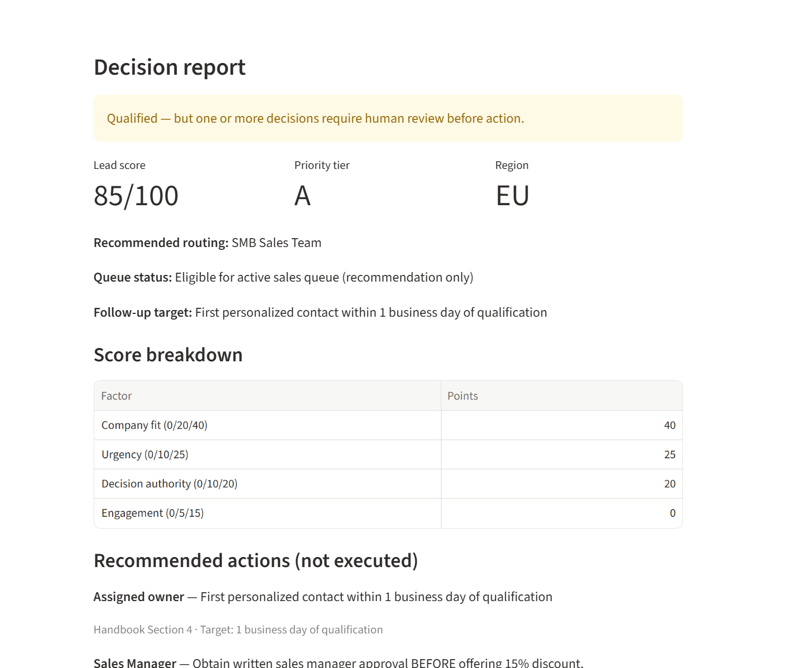

LOCAL DEMO
Sales-policy assistance
Ask questions against a synthetic sales handbook using separate Gemini and Claude Dify workflows.
Source labels; passage-level citations are not yet verified.AllSales CRM brings policy-assisted answers, transparent lead qualification and company-scoped lead management into one evolving sales platform.
Built around accountable rules and human review—not autonomous sales decisions.

01 / CAPABILITIES
The codebase contains these capabilities at different development stages. They are not yet one publicly deployed service.
Ask questions against a synthetic sales handbook using separate Gemini and Claude Dify workflows.
Source labels; passage-level citations are not yet verified.Deterministic Python rules calculate lead priority, routing and next-step recommendations.
Approval and escalation remain with people.FastAPI endpoints and PostgreSQL models support synthetic leads with role and membership checks.
Local Auth0 sign-in and synthetic lead management demonstrated.Creation and update events record verified actors and meaningful changes for authorized administrators.
Development-grade records, not tamper-proof auditing.02 / PROJECT EVIDENCE
These screenshots come from the project's documented local Streamlit demonstrations. Every example uses fictional lead information.
Screenshots are evidence of a local demonstration—not evidence of production deployment or real CRM actions.
03 / HOW IT IS BUILT
The original AI demo and the newer authenticated workspace are still separate. The local sign-in-to-database journey has been demonstrated. Next: approval-controlled workflow automation.
Implemented for local demonstrations
Gemini and Claude answer policy questions through Dify; deterministic rules handle lead scoring.
Local authenticated journey demonstrated
Verified OIDC identity and organization memberships protect lead and activity endpoints in tested API scenarios.
04 / DEVELOPMENT
The objective is a product businesses can genuinely use—not a checklist of technologies or a claim of readiness before testing.
View development roadmapRules-based lead qualification, Dify policy workflows, organization-scoped lead APIs, database migrations and activity records.
Approval-controlled n8n integration, authenticated browser automation and further security verification.
Company-specific knowledge security, approved CRM integrations, monitoring, backup recovery, privacy controls and independent security review.
EXPLORE THE SOURCE
Source code, documented evaluation, architecture and known limitations are available in the public repository.